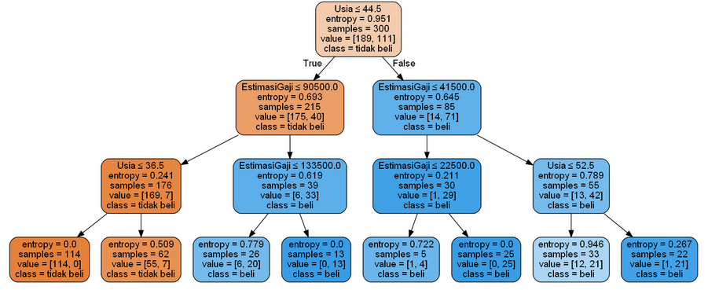

Mengenal Decision Tree¶
Pengertian Decision Tree¶
Decision Trees adalah suatu metode data mining yang bersifat supervised classification dimana setiap record di dalam suatu dataset yang akan dimodel harus mempunyai class/category. Misalnya dataset yang tersedia untuk pemodelan Decision Trees terdiri dari:Jumlah Anggota Rumah Tangga, Jenis Lantai, Jenis Jamban, Luas Lantai, Miskin/Tidak Miskin. Empat variabel pertama disebut dengan predictor dan satu variabel terakhir adalah class atau category.
Decision trees secara khusus melakukan pemodelan dengan berusaha memodel record yang tersedia ke dalam bentuk pohon keputusan. Dimana dalam suatu pohon keputusan akan ada interior node yang dilabeli dengan suatu variabel. Dari setiap interior node akan keluar tanda panah yang dilabeli dengan nilai dari variabel yang ada pada interior node tersebut. Di bagian akhir pohon keputusan akan terdapat leaf yang dilabeli dengan class atau category. Dalam penggunaannya, atau dalam pengimplementasian model decision trees ini ke dalam suatu sistem (umumnya sistem pendukung keputusan), model pohon keputusan yang didapat perlu diekstrak ke dalam bentuk rule-rule yang berbentuk if – then.
Decision tree biasanya digunakan dalam riset operasi dan manajemen operasi. Jika, dalam praktiknya, keputusan harus diambil secara online tanpa penarikan kembali di bawah pengetahuan yang tidak lengkap, sebagai model pilihan terbaik atau algoritma model seleksi online decision tree harus diparalelkan dengan model probabilitas. Penggunaan lain dari decision ini yaitu sebagai alat deskriptif untuk menghitung probabilitas bersyarat.
Di antara alat pendukung keputusan lainnya, decision tree memiliki beberapa keunggulan, yaitu:
- Mudah dimengerti dan dipahami. Orang-orang bisa memahami model decision tree dengan penjelasan singkat.
- Memiliki nilai walaupun dengan sedikit data yang rumit. Wawasan penting dapat dihasilkan berdasarkan para ahli yang menggambarkan situasi dan preferensi mereka untuk hasil.
- Membantu menentukan nilai terburuk, terbaik, dan nilai yang diharapkan untuk berbagai skenario.
- Menggunakan model kotak putih jika hasil diberikan oleh model.
- Dapat dikombinasikan dengan teknik pengambilan keputusan lainnya.
Decision tree juga memiliki kekurangan, seperti:
-
Tidak stabil, yang berarti bahwa perubahan kecil dalam data dapat menyebabkan perubahan besar dalam struktur decision tree optimal.
-
Relatif tidak akurat. Banyak prediktor lain memiliki kinerja yang lebih baik dengan data serupa. Hal ini dapat diatasi dengan mengganti decision tree tunggal dengan forest of decision tree acak. Namun hutan yang acak tidak semudah memahami decision tree tunggal.
-
Untuk data yang termasuk variabel kategorikal dengan jumlah level yang berbeda, perolehan informasi dalam decision tree cenderung mendukung atribut dengan level yang lebih banyak.
-
Perhitungan bisa menjadi sangat kompleks, terutama jika banyak nilai tidak pasti dan / atau jika banyak hasil dikaitkan.
Implementasi¶
Menginstall Library
# Mengimpor library
import numpy as np
import matplotlib.pyplot as plt
import pandas as pd
from sklearn.tree import DecisionTreeClassifier # Import Decision Tree Classifier
from sklearn.model_selection import train_test_split # Import train_test_split function
from sklearn import metrics #Import scikit-learn metrics module for accuracy calculation
from sklearn.tree import export_graphviz
from sklearn.externals.six import StringIO
from IPython.display import Image
import pydotplusmenginputkan dataset sesuai file yang akan di inputkan
# Mengimpor dataset
dataset = pd.read_csv('Iklan_sosmed.csv')Mengambil nama kolom
x = dataset[['Kelamin', 'Usia', 'EstimasiGaji']]
y = dataset[['Beli']]Membagi dataset menjadi Training set dan Test set
from sklearn.model_selection import train_test_split
x_train, x_test, y_train, y_test = train_test_split(x, y, test_size = 0.25, random_state = 0)
x_trainMembuat decision Tree classifer objek
clf = DecisionTreeClassifier(criterion="entropy", max_depth=3)
# Train Decision Tree Classifer
clf.fit(x_train,y_train)
#Predict the response for test dataset
predicted_y = clf.predict(x_test)
clf = DecisionTreeClassifier(criterion="entropy", max_depth=3)
# Train Decision Tree Classifer
clf.fit(x_train,y_train)
#Predict the response for test dataset
predicted_y = clf.predict(x_test)Hasil Implementasi¶
| Kelamin | Usia | EstimasiGaji | |
|---|---|---|---|
| 250 | 0 | 44 | 39000 |
| 63 | 1 | 32 | 120000 |
| 312 | 0 | 38 | 50000 |
| 159 | 0 | 32 | 135000 |
| 283 | 0 | 52 | 21000 |
| 340 | 0 | 53 | 104000 |
| 81 | 1 | 39 | 42000 |
| 349 | 1 | 38 | 61000 |
| 153 | 0 | 36 | 50000 |
| 295 | 0 | 36 | 63000 |
| 96 | 0 | 35 | 25000 |
| 89 | 1 | 35 | 50000 |
| 296 | 1 | 42 | 73000 |
| 21 | 0 | 47 | 49000 |
| 365 | 0 | 59 | 29000 |
| 216 | 1 | 49 | 65000 |
| 259 | 0 | 45 | 131000 |
| 49 | 0 | 31 | 89000 |
| 238 | 0 | 46 | 82000 |
| 343 | 0 | 47 | 51000 |
| 92 | 1 | 26 | 15000 |
| 223 | 1 | 60 | 102000 |
| 234 | 0 | 38 | 112000 |
| 232 | 1 | 40 | 107000 |
| 377 | 0 | 42 | 53000 |
| 142 | 1 | 35 | 59000 |
| 22 | 1 | 48 | 41000 |
| 252 | 0 | 48 | 134000 |
| 350 | 0 | 38 | 113000 |
| 168 | 1 | 29 | 148000 |
| ... | ... | ... | ... |
| 243 | 0 | 56 | 104000 |
| 115 | 1 | 40 | 57000 |
| 265 | 0 | 42 | 108000 |
| 72 | 0 | 20 | 23000 |
| 333 | 1 | 40 | 65000 |
| 25 | 1 | 47 | 20000 |
| 165 | 0 | 18 | 86000 |
| 337 | 1 | 35 | 79000 |
| 384 | 0 | 57 | 33000 |
| 174 | 0 | 34 | 72000 |
| 386 | 0 | 49 | 39000 |
| 39 | 0 | 27 | 31000 |
| 193 | 1 | 19 | 70000 |
| 314 | 0 | 39 | 79000 |
| 88 | 1 | 26 | 81000 |
| 70 | 1 | 25 | 80000 |
| 87 | 0 | 28 | 85000 |
| 292 | 1 | 55 | 39000 |
| 242 | 0 | 50 | 88000 |
| 277 | 1 | 49 | 88000 |
| 211 | 1 | 52 | 150000 |
| 9 | 0 | 35 | 65000 |
| 359 | 1 | 42 | 54000 |
| 195 | 1 | 34 | 43000 |
| 251 | 1 | 37 | 52000 |
| 323 | 0 | 48 | 30000 |
| 192 | 1 | 29 | 43000 |
| 117 | 1 | 36 | 52000 |
| 47 | 0 | 27 | 54000 |
| 172 | 0 | 26 | 118000 |
300 rows × 3 columns
